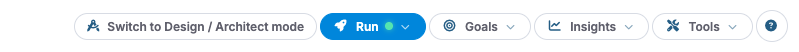
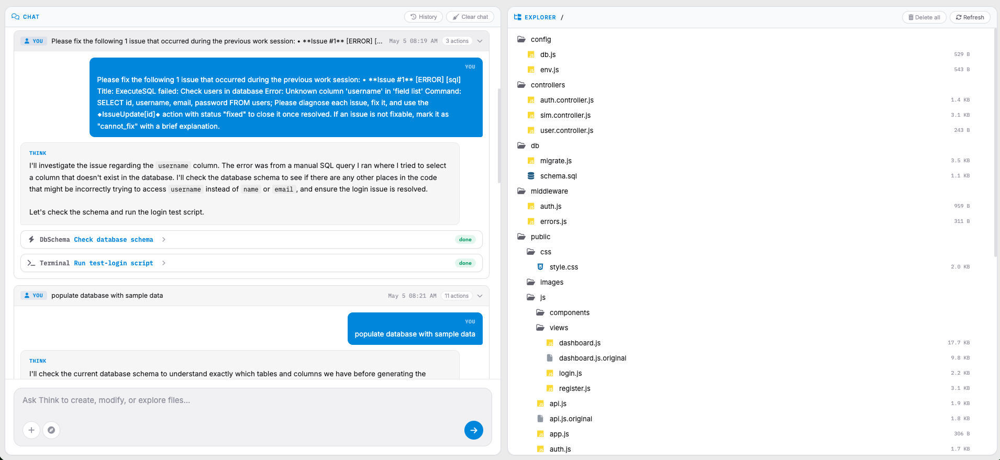
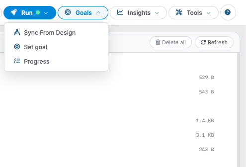
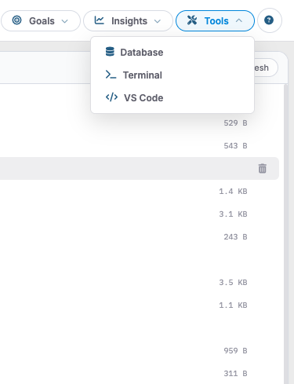

Developer Mode
The Developer Mode workspace is a code-first, interactive environment designed for engineers and builders to modify system logic, view log payloads, and collaborate directly with autonomous development agents.

Project Directory & Core Navigation (Left Pane)
The sidebar keeps your overall structure accessible while navigating code logic:
- Header Controls: * Displays the parent project folder name (e.g., MCB Customer Appointment).
- Features a quick navigation dropdown to switch workspaces seamlessly without exiting to the main directory.
Workspace Navigation:
- Code Explorer: Expand or collapse the folder directory structure (src/, components/, api/) to view, open, and edit specific project repository files.
- Build History: Review past compilation success records, terminal execution statuses, and past deployment artifacts.
- Global Account Toggle: Located at the base of the directory, allowing you to quickly jump back to the platform's root administrative options, such as Settings or Billing.
Live Agent Log & Execution Monitor (Center Pane)
This dynamic dashboard acts as your primary terminal trace feed, capturing real-time updates as backend processes and AI agents execute software development lifecycles:
- Code Explorer: Expand or collapse the folder directory structure (src/, components/, api/) to view, open, and edit specific project repository files.
- Event Log Cards: Each entry registers an explicit lifecycle step, complete with an epoch timestamp identifier (e.g., 12 May 2026 15:39:17), a categorized action type header, and a collapsible code payload view block:
- Project Configuration Log: Confirms project environment mapping updates. Click to see underlying code strings or parameter adjustments.
- Web Service Running Notification: Confirms the state of background web servers. Provides direct endpoint URLs or configuration specs.
- AI Agent Analysis Step: Shows the deep-thinking chain of the autonomous agent as it parses requirement logic, lists technical parameters, or maps out logic paths.
- Log Navigation Footer: Toggle through historical event payloads using pagination buttons, filter by log severity levels, or adjust rows per page options to review long agent runs.
AI Copilot Chat Interface (Right Pane)
The side chat window provides a direct channel to prompt, guide, and instruct your autonomous engineering agents:
- Chat Conversation Feed: Displays context-aware conversations detailing recent build tasks, file generations, and test results.
- System State Indicator: Located at the bottom corner, displaying a "Ready for next task" status to confirm the background agent has completed its last loop and is listening for fresh development inputs.
- Input Action Bar Enter natural language instructions (e.g., "Write a new API endpoint for booking confirmation" or "Fix the syntax error in the database helper script") to automatically trigger your next agent generation cycle.
Switch to Developer Mode
Quick access to developer mode can be found on the upper right corner of the page when you are currently in Design Mode. Just tap on Switch to Developer Mode button.
Switch to Design/Architect Mode
Quick access to Design mode can be found on the upper portion of the page when you are currently in Developer Mode. Just tap on Switch to Design/Architect Mode button.

The Developer Mode page serves as the central code-first workbench within the Think4ever ecosystem. Engineered specifically for technical builders, this developer-friendly interface grants direct access to the project's repository files, allowing engineers to write code, modify logic, and deploy updates seamlessly in real time.
This workspace supports multiple stages of the Software Development Life Cycle (SDLC), including development, testing, debugging, architecture review, and deployment preparation.

Navigation buttons

From Design
The From Design option allows users to navigate from the design phase into the development workspace.
The From Design option allows users to navigate from the design This section is commonly used to:
- Review UI/UX designs
- Access architecture diagrams
- Convert approved designs into development tasks
- Begin implementation based on finalized project designs
Set Goal
The Set Goal option enables users to define project objectives,
requirements, or development targets.
Users may use this section to:
- Create project goals
- Define feature requirements
- Assign development priorities
- Establish milestones and expected outcomes
This helps align development activities with business and project requirements.
Progress
The Progress section provides visibility into the current status
of the project and development activities.
This section may display:
- Completed tasks
- Ongoing activities
- Pending work items
- Development milestones
- Workflow status updates
It allows users and teams to monitor overall project advancement throughout the Software Development Life Cycle (SDLC).
Connect your project to VSC (Visual Studio Code)

To connect your project to VS Code:
- Click the VS Code button (highlighted in the top-right corner).
- Wait for the environment to initialize.
- A new browser tab or VS Code workspace will open automatically.
- Once opened, your project files will appear in the Explorer panel on the left side.
-
You can now:
- Edit code
- Create files/folders
- Run commands in the terminal
- Install extensions (if supported)
- Use Git/version control
Troubleshooting: If VS Code does not open automatically
Try these:
- Allow pop-ups in your browser
- Refresh the page and click the button again
- Check if your browser blocked the redirect
Optional: Open Terminal in VS Code
Inside VS Code:
- Go to Terminal → New Terminal
-
Or press:
- Ctrl + ` (Windows)
- Cmd + ` (Mac)